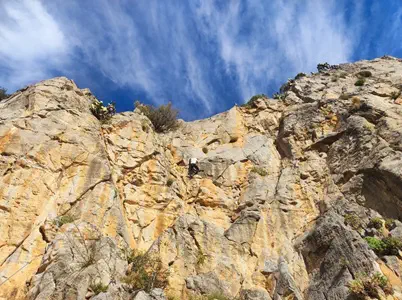
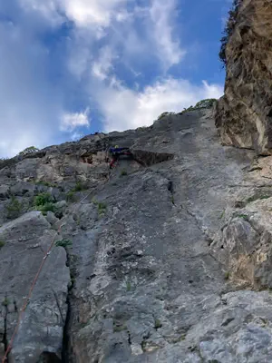

Le falesie sportive attualmente praticabili sulla rocca di Cefalù sono tre.

Si raggiunge salendo lungo la scalinata dopo la biglietteria e si scavalca la rete prima del cancello.

Settore principale. Dietro il cimitero.
Alla sinistra dell'ingresso del cimitero imboccare la strada che sale.